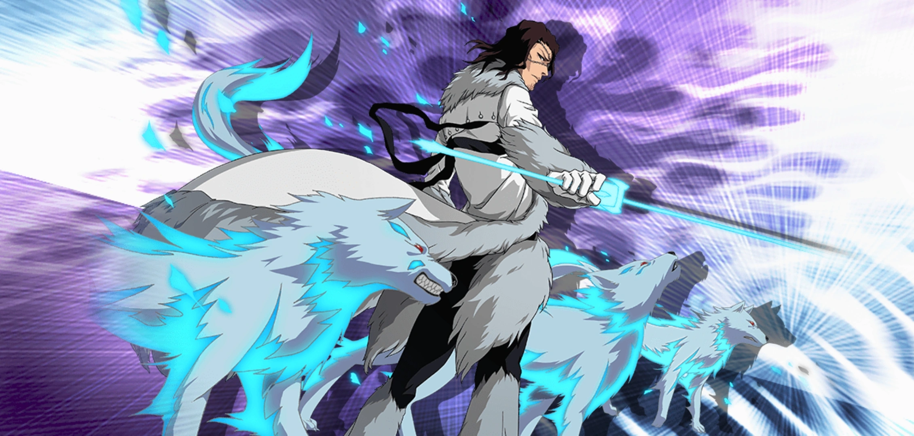

What is resurreccion
resurreccion is a power that can only be used by arrancar and espada. Seance the espada and arrancar are hollows who have become soul reaoers unlike soul reapers who use shikai and banaki the espada and arrancar use there resurreccion this brings them back to orgianl hollow form which was sealed into thier swords and just like a soul reapers zanpakuto has a release comand for thier shikai the espada and arrancar have a relase command for thier resurreccion some exaples of this are "grind pantera", "kick about los lobos", "emprison murcielago" when these release calls are maid the espada or arrancar returnes back to there origianl state and giving them and increase in power as well.
